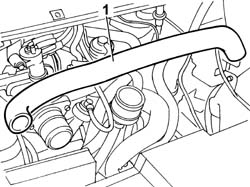

1080D14 PIPE FROM ENGINE OIL VAPOUR SEPARATOR TO INTAKE - R + R
- Path
- Procedures > 10 ENGINE > 1080 EXHAUST EMISSION CONTROL SYSTEM > 1080D CRANKCASE VAPOUR/GAS RECIRCULATION SYSTEM > 1080D14 PIPE FROM ENGINE OIL VAPOUR SEPARATOR TO INTAKE - R + R
- Kind
- repair procedure (removal / refitting; the operation number is the code)
- Applies to
- engines: 2.0 16V JTD, 2.2 16V JTD; all production periods
- Interactive page
- https://sloeber94.github.io/elrnDB-fUlss/en/#/179007112
Applies to: engines: 2.0 16V JTD; all production periods
 Removing
Removing
 Refitting
Refitting- Disconnect the negative battery terminal.
Op. 5010B18 CLIMATE CONTROL UNIT AIR INTAKE - R.R.
1. Disconnect the engine oil vapour pipe from the rigid air intake pipe between the filter and the turbocharger and from the separator, then remove it.

Applies to: engines: 2.0 16V JTD; all production periods
Refitting
Removing- Fit the engine oil vapour pipe and connect it to the rigid pipe and to the separator.
See in Op. 1088B10
Op. 5010B18 CLIMATE CONTROL UNIT AIR INTAKE - R.R.
- Connect the negative battery terminal.
Applies to: engines: 2.2 16V JTD; all production periods
Removing
Refitting- Disconnect the negative battery terminal.
Op. 5010B18 CLIMATE CONTROL UNIT AIR INTAKE - R.R.
See in Op. 1088B10
1. Disconnect the engine oil vapour pipe from the rigid air intake pipe between the filter and the turbocharger and from the separator and then remove it.
Applies to: engines: 2.2 16V JTD; all production periods
Refitting
Removing- Fit the engine oil vapour pipe and connect it to the rigid pipe and to the separator.
Op. 5010B18 CLIMATE CONTROL UNIT AIR INTAKE - R.R.
See in Op. 1088B10
- Connect the negative battery terminal.